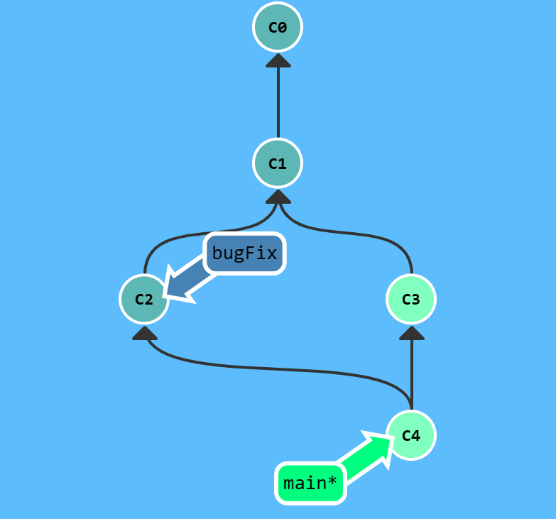
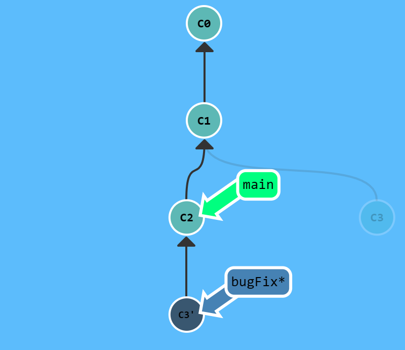
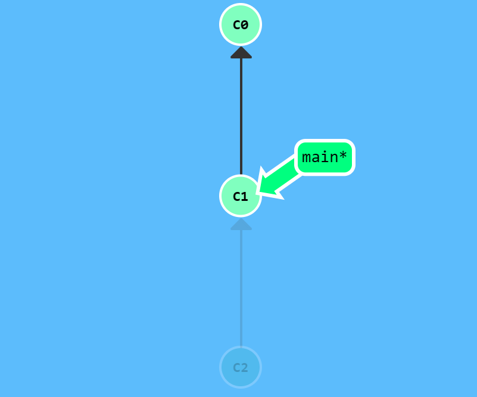
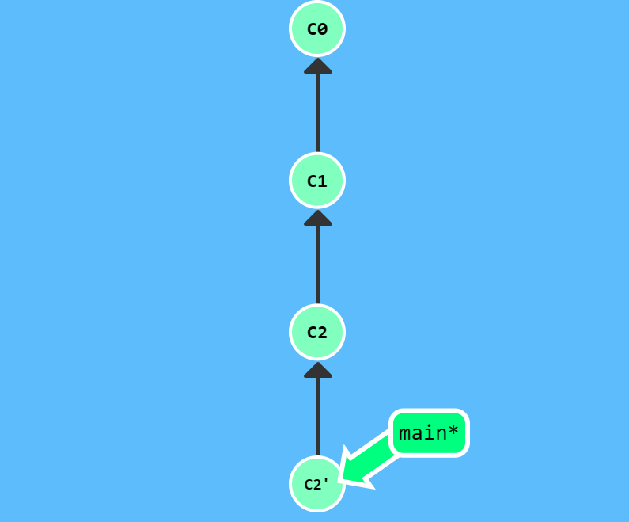
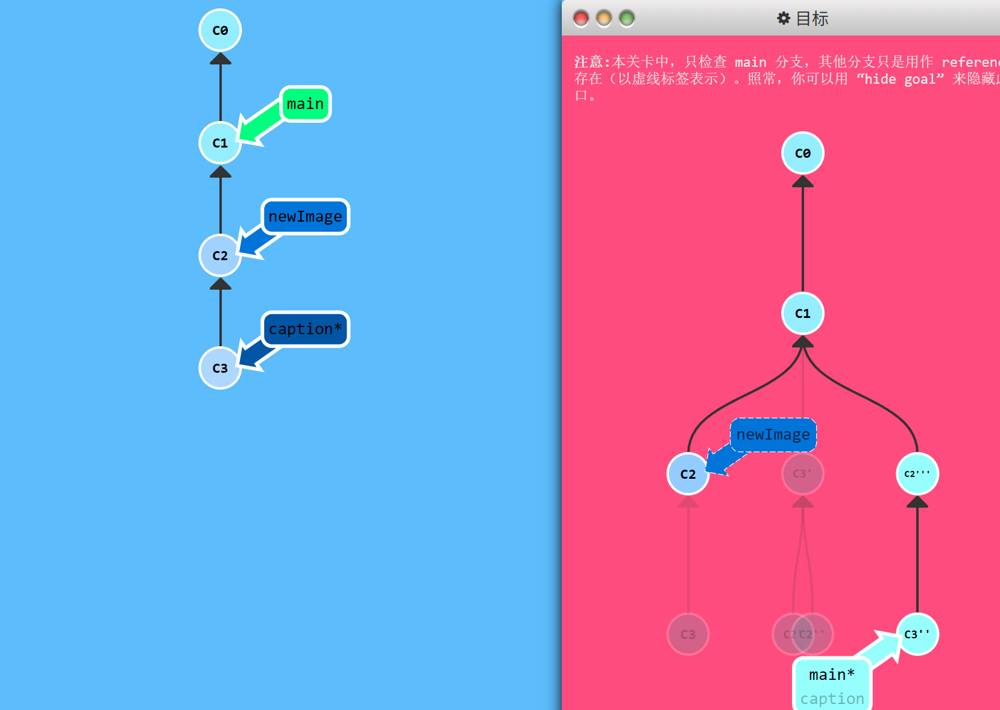
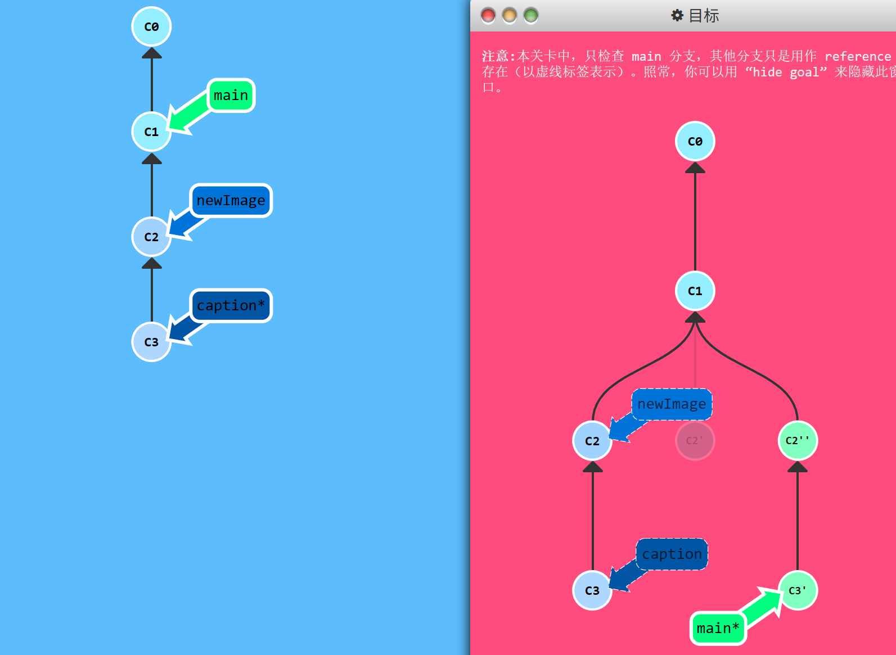
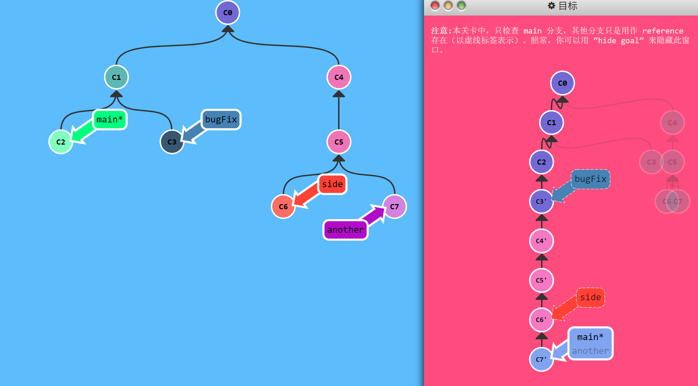
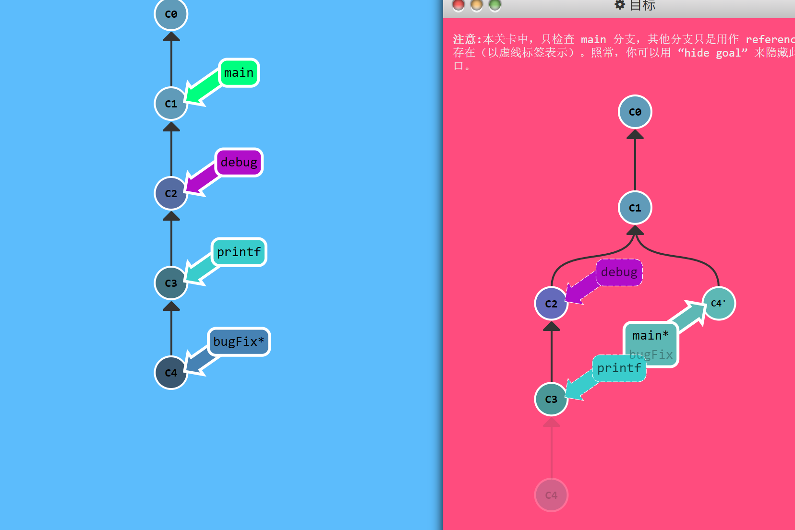

Git is often compared to a Directed Acyclic Graph (DAG) or a continuously growing tree. In this tree, commits are the nodes, branches are pointers to nodes, and HEAD is your current position. Understanding how various Git operations modify this tree is key to mastering Git. This article will start from the tree perspective, sort out the impact of common Git operations on the commit tree, and help readers build a clear mental model.
This article is also a supplement to How to Maintain Git and Your Local Code?
Basic Concept
Almost all Git commands (commit, merge, rebase, reset, cherry-pick, etc.) ultimately operate on commit objects (creating new commits, moving pointers to a certain commit, etc.). Both branch names and HEAD are resolved by Git to the corresponding commits they point to.
Commit: Each commit creates a new node in the tree. The node contains a complete project snapshot and references to its parent commit(s) (usually one or more).
Branch: A branch is a movable pointer that points to a node. When you create a new branch based on a node, the new branch points to that node. Later, when you commit on that branch, the branch automatically moves forward.
HEAD: HEAD is a symbolic reference pointing to your current location. It usually points to a branch (meaning you are “on” that branch), but it can also point directly to a node (detached HEAD state). Almost all commands that modify the tree start from the position of HEAD.
Node Operations: Creation and Movement
1. Create a New Node at the Current Location
git commit
No matter whether HEAD points to a branch or a specific node, executing git commit creates a new node based on the current node, and moves the current branch (if HEAD points to a branch) or HEAD itself (if detached) to the new node.
2. Move HEAD
git checkout <commit>
Directly specify a node (using a hash, relative reference, or tag) to make HEAD point to that node, entering a detached HEAD state. In this state, commits will not move any branch; the new node will become a dangling node (unless you later merge it into some branch).
Branch Operations: Creation, Switching, and Movement
1. Create a Branch Pointer
git branch <branch-name> [<commit>]
If <commit> is not specified, a new branch is created at the current HEAD position. The new branch is just a label pointing to that node; it does not automatically switch to it. You still need to use git checkout later.
2. Switch Branches
git checkout/switch <branch>
Makes HEAD point to the specified branch, and restores the working directory to the content of the node that branch points to. Subsequent commits will move that branch.
git checkout -b <your-branch-name> creates a new branch and switches to it.
3. Force Move a Branch
git branch -f <branch> <commit>
Forcibly points the branch pointer to any node. This is often used to correct branch positions or adjust the tree structure with relative references.
Tree Refactoring: Merge, Rebase, and Cherry-pick
Many people initially think that merge and rebase operate on branches, but in reality they operate on commits, and branch names are just one way to refer to a commit.
1. Merge Nodes
git merge <branch>
- If the current branch is an ancestor of the target branch, a fast-forward merge is performed: the current branch pointer is simply moved forward to the target branch.
- Otherwise, Git creates a new merge node, which has two parents (the current branch’s node and the merged branch’s node), and moves the current branch to this new node. After the merge, the tree structure shows a fork and then a merge.

2. Rebase / Linearize History
git rebase <target>
Rebase essentially copies all commits on the current branch that are not in the common ancestor with <target>, and appends them sequentially after the <target> node. Finally, the current branch is moved to the last newly copied commit. The original commits still exist, but are no longer referenced by the branch (they will be garbage collected). The rebased history is a straight line, which is cleaner.

3. Copy Nodes to the Current Location
git cherry-pick <commit1> <commit2>...
Copies the changes from arbitrary nodes (which can come from different branches) to the current HEAD location (order matters), generating new nodes. This is like “plucking” fruit directly from the tree.
4. Interactive Rebase
git rebase -i HEAD~<n> (-i is short for --interactive)
Opens an interface that lets you reorder, delete, squash (combine), or modify commit messages for the last n commits. After the operation, these commits are “rewritten”, generating a series of new nodes, allowing you to clean up history. It also displays the hash and commit message of each commit, which helps you understand what changes each commit introduced.
In practice, the so-called UI window usually opens a file in a text editor (such as Vim).
Undo and Modify: How to Change Parts of the Tree
1. Local Undo
git reset --soft/mixed/hard <commit>
reset directly moves the current branch pointer to the specified node, as if the later commits never happened. Depending on the mode, the working directory and staging area are affected differently. This method cannot be used for branches shared remotely, because it rewrites history.
Parameters:
-soft: Only moves the branch pointer; the staging area and working directory remain unchanged. The staging area still contains the content from before the reset, so you can directlycommit --amendor re-commit.-mixed(default): Moves the pointer and resets the staging area to the content of the new commit, but leaves the working directory unchanged. So the original changes become “unstaged”.-hard: Moves the pointer and resets both the staging area and working directory to the content of the new commit. All uncommitted modifications in the working directory are discarded (dangerous operation).

2. Safe Remote Undo
git revert <commit>
git revert creates a new commit’ after the commit you want to revert, which contains exactly the changes needed to cancel out the content of that commit.

3. Modify the Latest Commit
git commit --amend
Essentially creates a new node that replaces the current branch’s latest node. The new node contains the original commit’s changes plus any additional changes in the staging area. The old node is abandoned, and the branch points to the new node.
Viewing and Comparing the Tree
1. View the Commit Tree Structure
git log displays commit history.
git log --graph --all --decorate can show the entire commit tree structure, branch pointer positions, and HEAD location.
git log can be combined with absolute/relative references to view commit hashes for use in relative references.
2. Compare Tree Structures
You can extract commit hashes with git log.
Compare two different commits:
git diff commit1 commit2Compare the previous version with the latest version:
git diff HEAD^ HEADCompare working directory with the index:
git diff(sometimes alsogit status)Compare index with HEAD:
git diff --cached HEAD
Remote Collaboration: Synchronizing Two Trees
In distributed version control, your local repository and the remote repository each maintain their own commit tree. They are synchronized through operations like clone, fetch, pull, and push.
1. Clone the Remote Tree Locally
When you execute git clone <remote-url>, Git does three things:
Creates a new directory and Git repository locally.
Downloads the entire commit tree from the remote repository, copying all nodes.
Creates a remote reference named
originand sets up remote branches (e.g.,origin/main) pointing to the latest nodes of the remote’s main branches. At the same time, Git automatically creates a localmainbranch pointing to the same node asorigin/main, and attaches HEAD to the localmain.
2. Push Local Tree Nodes to the Remote Tree
git push uploads new nodes from a specified local branch to the remote repository, and requests the remote repository to move its corresponding branch pointer forward.
Suppose you made two commits on your local main branch, turning the tree into C3 ← C4, while the remote origin/main still points to C2. When you execute git push origin main:
Git packages all nodes on the local
mainbranch that are afterorigin/main(C3, C4) and sends them to the remote server.The remote repository receives them, adds these nodes to its commit tree, and updates its
mainbranch pointer to C4.Simultaneously, the local
origin/main(a local mirror of the remote branch) is also updated to point to the same node C4.
If someone else has pushed a new node C5 to the remote main before you, your local tree lacks C5, and the push will be rejected. In that case, you need to first pull (fetch + merge/rebase) to integrate the remote changes, so your local tree includes C5, and then push again.
3. Download New Nodes from the Remote Tree
git fetch communicates with the remote repository, retrieves nodes that are in the remote’s tree but missing locally, downloads them to the local repository, and updates the corresponding remote branch pointers (e.g., origin/main).
However, it does not modify your local branches (e.g., main). That is, after fetch, your local tree gains some new nodes from the remote, but your working branches remain where they were. You need to manually merge or rebase to integrate them.
4. Fetch and Merge
git pull is a combination of git fetch followed by git merge (default behavior; can also be configured as fetch + rebase).
Comprehensive Examples
1. Modify a Non-Latest Commit (C2)
Using git rebase -i

git rebase -i # Reorder commits, move the one to modify to the front
git commit --amend # Make the small changes
git rebase -i # Reorder them back to the original order
git rebase caption main # Move main to the front of the modified historyUsing git cherry-pick

git checkout main # Important: set HEAD correctly
git cherry-pick C2 # Copy C2 to the new branch (even though C2 is already on main)
git commit --amend # Modify C2
git cherry-pick C3 # Then copy C32. Multiple Rebases

main in an orderly fashion.# The order of rebasing is important: git rebase <upstream> <branch> rebases <branch> onto <upstream>
git rebase side another # rebase another onto side, then another points to the result
git rebase bugFix another # rebase another onto bugFix
git rebase main another
git rebase another main # Finally update main to the tip of another3. Clean Up a Local Stack of Commits

git rebase -i HEAD~3 # Drop the debug commits, keep only the final one
git rebase main # Rebase the cleaned branch onto mainReference
The inspiration and illustrations for this article come from Learn Git Branching